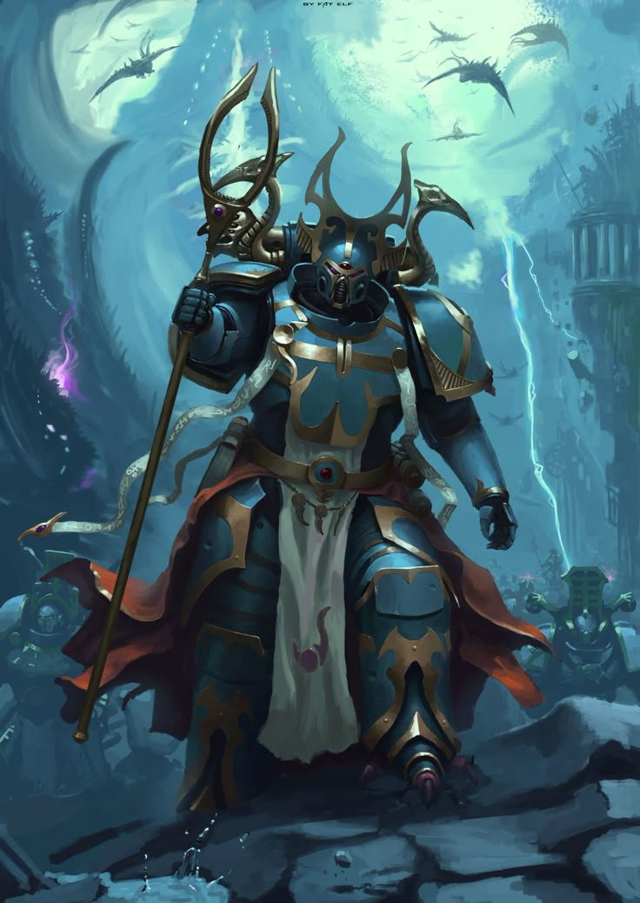

¡Hola! Mi nombre es Jeamdel I. Rosado Vega, tengo 19 años y vivo en la isla de Puerto Rico. Me gusta mucho "Warhammer 40k", especialmente la facción de los Mil Hijos (aunque tengo otros favoritos, como los "Ultramarines" y los "Sons of Horus"). Estoy estudiando IT, por lo que decidí hacer este website para mi proyecto final del curso de Diseño de Páginas Web. Espero que encuentren el contenido de este website interesante y que, tal vez, decidan aprender más sobre esta asombrosa facción.

Mi mayor motivación por crear este website es mi pasión por la franquicia de "Warhammer", especialmente los Mil Hijos. Ellos son una de mis facciones favoritas y cuando vi la oportunidad de hablar sobre ellos, la tomé. Además, como colecciono las figuras de acción hechas por "JoyToy", sentí que era una buena idea formar un catálogo de todas las figuras hechas por ellos de los Mil Hijos, para que así otros fanáticos puedan ver qué hay disponible en el mercado.
